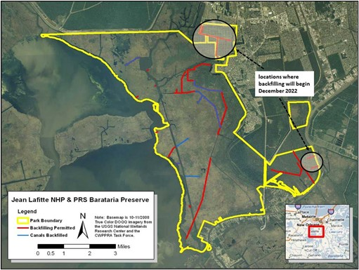

LOUISIANA · BARATARIA BASIN
Open a bank. Fill a canal. Discover which connections help—and which carry the cost.
BARATARIA / BASIN OVERVIEW
Mapped defenses are context only. Dashed work footprints and bank barriers are hypothetical; structure condition and eligibility are unverified.
Changing a scenario resets both runs. Credits are game units, not dollars.
COMPARE THE CONSEQUENCES
EVIDENCE & ASSUMPTIONS
Water outlines: U.S. Census Bureau 2025 TIGER/Line AREAWATER for Jefferson, Lafourche, Plaquemines and St. Charles parishes. Lines and points: USACE National Levee Database public embankments, floodwalls, closure structures and pump stations, retrieved November 9, 2026. Neither source is a complete inventory or a present-day condition survey.
A–H are candidate scenario segments anchored to Census waterway geometry, not verified spoil banks or approved work locations. Bank alignments, initial wetland habitat, salinity, source strengths, construction costs and ecological timing are game assumptions. All non-water cells in the focus area are treated as wetland; vegetation, buildings and roads have not yet been classified. There is no flood level, property damage, storm surge or sediment-delivery model.
Water offers faster modeled exchange than land. Assumed bank edges block exchange until gapped. Filling a canal segment places mud and slows that corridor; mud becomes marsh after three annual turns. Fresh and saline influences travel from fixed boundary cells; their relative path costs determine a salinity category. Five salty years kill marsh. Optional erosion removes marsh with at least three water neighbors. Occupied habitat persists for one unsuitable year and disappears after the second. These rules are not calibrated to Barataria.
Preview compares the project with waiting on the same current landscape for up to six years, with no further actions. The baseline evolves under identical scenario settings without your interventions. No gap generates freshwater or sediment.
The NPS map below was published in 2022. A September 2024 NPS presentation reported 12.75 miles of backfilling completed. It is historical evidence for intervention types, not the initial condition or construction status of sites A–H.

Census TIGER/Line · USACE NLD services · NPS 2022 reference · NPS September 2024 update